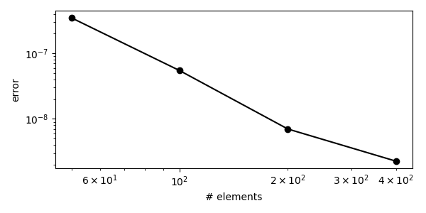
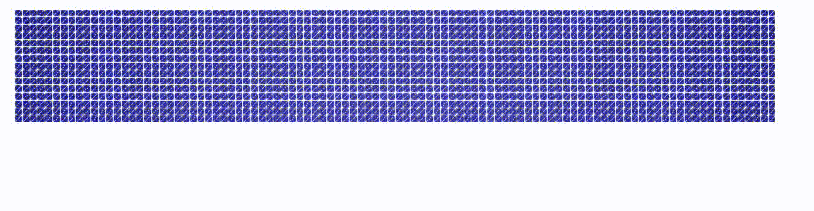

Implicit gradient-enhanced damage model¶
Introduction and governing equations¶
A local isotropic damage model…
… is basically the modified linear-elastic momentum balance equation with
elasticity tensor \(\boldsymbol C\) - build from \(E, \nu\) or Lamé constants \(\lambda, \mu\)
damage \(\omega \in [0,1)\) that is driven by the history variable \(\kappa\)
strains \(\boldsymbol \varepsilon = \frac{1}{2}(\nabla \boldsymbol d + (\nabla \boldsymbol d)^T)\), here in Voigt notation, meaning a vector of \([\boldsymbol \varepsilon_{xx}, \boldsymbol \varepsilon_{yy}, \frac{1}{2}\boldsymbol \varepsilon_{xy}]^T\)
the KKT conditions for \(\kappa\) translate to \(\kappa = \max(\kappa, \|\boldsymbol \varepsilon\|)\), where the latter term is a scalar norm of the local strains
This local model exhibits various numerical problems, e.g. localization in single bands of elements with a vanishing fracture energy upon mesh refinement. One way to overcome these issues is to use nonlocal models that introduce a mesh-independent length scale. Here, this is by replacing the local strain norm with the nonlocal equivalent strains \(\bar \varepsilon\) as an additional degree of freedom (DOF) that is calculated by a screened Poisson equation that limits its curvature. Now, the full model reads
and details can be found, e.g., in
the original paper Gradient enhanced damage for quasi‐brittle materials, Peerlings et al., 1996 and
a more recent paper discussing alternative solution strategies Implicit–explicit integration of gradient-enhanced damage models, Titscher et al., 2019
Next, we will discuss the building blocks of the constitutive model with the code.
Remark: The functions in this section are written to work on multiple values simultaneously. So instead of evaluating a function once per scalar, we group the scalars in a (possibly huge) vector and apply the function once. This may explain some strange syntax and slicing in the code below.
from helper import *
from dolfin.cpp.log import log
Damage law¶
The simplest case that is used in Peerlings et al. for an analytic solution is the perfect damage model that, if inserted in the stress-strain relationship, looks like
stress
ft | _______________
| /
| /:
|/ :
0--:--------------> strain
k0
def damage_perfect(mat, kappa):
k0 = mat.ft / mat.E
return 1.0 - k0 / kappa, k0 / kappa ** 2
For the characteristic strain softening, an exponential damage law is commonly used. After reaching the peak load - the tensile strength \(f_t\), the curve shows an exponential drop to the residual stress \((1-\alpha)f_t\).
stress
ft |
| /\
| /: ` .
|/ : ` .. _____ (1-alpha)*ft
0--:--------------> strain
k0
def damage_exponential(mat, k):
k0 = mat.ft / mat.E
a = mat.alpha
b = mat.beta
w = 1.0 - k0 / k * (1.0 - a + a * np.exp(b * (k0 - k)))
dw = k0 / k * ((1.0 / k + b) * a * np.exp(b * (k0 - k)) + (1.0 - a) / k)
return w, dw
Constitutive law¶
Basically Hooke’s law in plane strain with the factor \((1-\omega)\).
def hooke(mat, eps, kappa, dkappa_de):
"""
mat:
material parameters
eps:
vector of Nx3 where each of the N rows is a 2D strain in Voigt notation
kappa:
current value of the history variable kappa
dkappa_de:
derivative of kappa w.r.t the nonlocal equivalent strains e
"""
E, nu = mat.E, mat.nu
l = E * nu / (1 + nu) / (1 - 2 * nu)
m = E / (2.0 * (1 + nu))
C = np.array([[2 * m + l, l, 0], [l, 2 * m + l, 0], [0, 0, m]])
w, dw = mat.dmg(mat, kappa)
sigma = eps @ C * (1 - w)[:, None]
dsigma_deps = np.tile(C.flatten(), (len(kappa), 1)) * (1 - w)[:, None]
dsigma_de = -eps @ C * dw[:, None] * dkappa_de[:, None]
return sigma, dsigma_deps, dsigma_de
Strain norm¶
The local equivalent strain \(\| \boldsymbol \varepsilon \|\) is defined as
\(I_1\) is the first strain invariant and \(J_2\) is the second deviatoric strain invariant. The parameter \(k=f_c/f_t\) controls different material responses in compression (compressive strength \(f_c\)) and tension (tensile strength \(f_t\)).
See: Comparison of nonlocal approaches in continuum damage mechanics, de Vree et al., 1995
Note that the implementation here is only valid for 2D plane strain!
def modified_mises_strain_norm(mat, eps):
nu, k = mat.nu, mat.k
K1 = (k - 1.0) / (2.0 * k * (1.0 - 2.0 * nu))
K2 = 3.0 / (k * (1.0 + nu) ** 2)
exx, eyy, exy = eps[0::3], eps[1::3], eps[2::3]
I1 = exx + eyy
J2 = 1.0 / 6.0 * ((exx - eyy) ** 2 + exx ** 2 + eyy ** 2) + (0.5 * exy) ** 2
A = np.sqrt(K1 ** 2 * I1 ** 2 + K2 * J2) + 1.0e-14
eeq = K1 * I1 + A
dJ2dexx = 1.0 / 3.0 * (2 * exx - eyy)
dJ2deyy = 1.0 / 3.0 * (2 * eyy - exx)
dJ2dexy = 0.5 * exy
deeq = np.empty_like(eps)
deeq[0::3] = K1 + 1.0 / (2 * A) * (2 * K1 * K1 * I1 + K2 * dJ2dexx)
deeq[1::3] = K1 + 1.0 / (2 * A) * (2 * K1 * K1 * I1 + K2 * dJ2deyy)
deeq[2::3] = 1.0 / (2 * A) * (K2 * dJ2dexy)
return eeq, deeq
Complete constitutive class¶
contains the material parameters
stores the values of all integration points
calculates those fields for given \(\boldsymbol \varepsilon, \bar \varepsilon\)
class GDMPlaneStrain:
def __init__(self):
# Young's modulus [N/mm²]
self.E = 20000.0
# Poisson's ratio [-]
self.nu = 0.2
# nonlocal length parameter [mm]
self.l = 200 ** 0.5
# tensile strength [N/mm²]
self.ft = 2.0
# compressive-tensile ratio [-]
self.k = 10.0
# residual strength factor [-]
self.alpha = 0.99
# fracture energy parameters [-]
self.beta = 100.0
# history variable [-]
self.kappa = None
# damage law
self.dmg = damage_exponential
def eps(self, v):
e = sym(grad(v))
return as_vector([e[0, 0], e[1, 1], 2 * e[0, 1]])
def kappa_kkt(self, e):
if self.kappa is None:
self.kappa = self.ft / self.E
return np.maximum(e, self.kappa)
def integrate(self, eps_flat, e):
kappa = self.kappa_kkt(e)
dkappa_de = (e >= kappa).astype(int)
eps = eps_flat.reshape(-1, 3)
self.sigma, self.dsigma_deps, self.dsigma_de = hooke(
self, eps, kappa, dkappa_de
)
self.eeq, self.deeq = modified_mises_strain_norm(self, eps_flat)
def update(self, e):
self.kappa = self.kappa_kkt(e)
Quadrature space formulation¶
- Degrees of freedom in a mixed function space
u = [d, e]
u = total mixed vector
d = displacement field \(\boldsymbol d\)
e = nonlocal equivalent strain field \(\bar \varepsilon\)
Momentum balance + Screened Poisson …
Rd = eps(dd) : sigma(eps(d), e) * dx
Re = de * e * dx + grad(de) . l ** 2 * grad(e) * dx - de * eeq(eps) * dx
plus their derivatives
dRd/dd = eps(dd) : (dSigma_deps) * eps(d)) * dx
dRd/de = de * (dSigma_de * eps(d)) *dx
dRe/dd = eps(dd) * (-deeq_deps) * e * dx
dRe/de = de * e * dx + grad(de) . l**2 * grad(e) * dx
The trivial terms in the equations above are implemented using FEniCS
forms. The non-trivial ones are defined as functions with prefix q_ in
appropriately-sized quadrature function spaces. The values for those functions
are calculated in the GDMPlaneStrain class above.
class GDM(NonlinearProblem):
def __init__(self, mesh, mat, **kwargs):
NonlinearProblem.__init__(self)
self.mat = mat
deg_d = 2
deg_e = 2
deg_q = 2
metadata = {"quadrature_degree": deg_q, "quadrature_scheme": "default"}
dxm = dx(metadata=metadata)
cell = mesh.ufl_cell()
# solution field
Ed = VectorElement("CG", cell, degree=deg_d)
Ee = FiniteElement("CG", cell, degree=deg_e)
self.Vu = FunctionSpace(mesh, Ed * Ee)
self.Vd, self.Ve = self.Vu.split()
self.u = Function(self.Vu, name="d-e mixed space")
# generic quadrature function spaces
q = "Quadrature"
voigt = 3
QF = FiniteElement(q, cell, deg_q, quad_scheme="default")
QV = VectorElement(q, cell, deg_q, quad_scheme="default", dim=voigt)
QT = TensorElement(q, cell, deg_q, quad_scheme="default", shape=(voigt, voigt))
VQF, VQV, VQT = [FunctionSpace(mesh, Q) for Q in [QF, QV, QT]]
# quadrature function
self.q_sigma = Function(VQV, name="current stresses")
self.q_eps = Function(VQV, name="current strains")
self.q_e = Function(VQF, name="current nonlocal equivalent strains")
self.q_k = Function(VQF, name="current history variable kappa")
self.q_eeq = Function(VQF, name="current (local) equivalent strain (norm)")
self.q_dsigma_deps = Function(VQT, name="stress-strain tangent")
self.q_dsigma_de = Function(VQV, name="stress-nonlocal-strain tangent")
self.q_deeq_deps = Function(VQV, name="equivalent-strain-strain tangent")
dd, de = TrialFunctions(self.Vu)
d_, e_ = TestFunctions(self.Vu)
d, e = split(self.u)
try:
f_d = kwargs["f_d"]
except:
f_d = Constant(1.0)
eps = self.mat.eps
self.R = f_d * inner(eps(d_), self.q_sigma) * dxm
self.R += e_ * (e - self.q_eeq) * dxm
self.R += dot(grad(e_), mat.l ** 2 * grad(e)) * dxm
self.dR = f_d * inner(eps(d_), self.q_dsigma_deps * eps(dd)) * dxm
self.dR += f_d * inner(eps(d_), self.q_dsigma_de * de) * dxm
self.dR += e_ * (de - dot(self.q_deeq_deps, eps(dd))) * dxm
#∂grad(e)/∂e de = linear terms of grad(e+de) = grad(de)
self.dR += dot(grad(e_), mat.l ** 2 * (grad(de))) * dxm
self.calculate_eps = LocalProjector(eps(d), VQV, dxm)
self.calculate_e = LocalProjector(e, VQF, dxm)
self.assembler = None
def evaluate_material(self):
# project the strain and the nonlocal equivalent strains onto
# their quadrature spaces and ...
self.calculate_eps(self.q_eps)
self.calculate_e(self.q_e)
eps_flat = self.q_eps.vector().get_local()
e = self.q_e.vector().get_local()
# ... "manually" evaluate_material the material ...
self.mat.integrate(eps_flat, e)
# ... and write the calculated values into their quadrature spaces.
set_q(self.q_eeq, self.mat.eeq)
set_q(self.q_deeq_deps, self.mat.deeq)
set_q(self.q_sigma, self.mat.sigma)
set_q(self.q_dsigma_deps, self.mat.dsigma_deps)
set_q(self.q_dsigma_de, self.mat.dsigma_de)
def update(self):
self.calculate_e(self.q_e)
self.mat.update(self.q_e.vector().get_local())
set_q(self.q_k, self.mat.kappa) # just for post processing
def set_bcs(self, bcs):
# Only now (with the bcs) can we initialize the assembler
self.assembler = SystemAssembler(self.dR, self.R, bcs)
def F(self, b, x):
if not self.assembler:
raise RuntimeError("You need to `.set_bcs(bcs)` before the solve!")
self.evaluate_material()
self.assembler.assemble(b, x)
def J(self, A, x):
self.assembler.assemble(A)
- Remark: Subclassing from
dolfin.NonlinearProblem… … is rather straight forward as we only need to pass our forms and boundary conditions to the
dolfin.SystemAssemblerand call it in the overwritten methodsF(assembles the out-of-balance forces) andJ(assembles the tangent) …… and allows us to directly use
dolfin.NewtonSolver- the Newton-Raphson implementation of FEniCS. Note that this algorithm (as probably every NR) always evaluatesFbeforeJ. So it is sufficient to perform theGDM.evaluate_materialonly inF.
Examples¶
Comparison with the analytic solution¶
The Peerlings paper cited above includes a discussion on an analytic solution
of the model for the damage_perfect damage law. A 1D bar of length \(L\)
(here modeled as a thin 2D structure) has a cross section reduction \(\alpha\)
over the length of \(W\) and is loaded by a displacement BC \(\Delta L\).
- Three regions form:
damage in the weakened cross section
damage in the unweakened cross section
no damage
and the authors provide a solution of the PDE system for each of the regions.
Finding the remaining integration constants is left to the reader. Here, it
is solved using sympy. We also subclass from dolfin.UserExpression to
interpolate the analytic solution into function spaces or calculate error norms.
class PeerlingsAnalytic(UserExpression):
def __init__(self, **kwargs):
self.L, self.W, self.deltaL, self.alpha = 100.0, 10.0, 0.05, 0.1
self.E, self.kappa0, self.l = 20000.0, 1.0e-4, 1.0
self._calculate_coeffs()
super().__init__(**kwargs)
def _calculate_coeffs(self):
"""
The analytic solution is following Peerlings paper (1996) but with
b(paper) = b^2 (here)
g(paper) = g^2 (here)
c(paper) = l^2 (here)
This modification eliminates all the sqrts in the formulations.
Plus: the formulation of the GDM in terms of l ( = sqrt(c) ) is
more common in modern publications.
"""
# imports only used here...
from sympy import Symbol, symbols, N, integrate, cos, exp, lambdify
import scipy.optimize
# unknowns
x = Symbol("x")
unknowns = symbols("A1, A2, B1, B2, C, b, g, w")
A1, A2, B1, B2, C, b, g, w = unknowns
l = self.l
kappa0 = self.kappa0
# 0 <= x <= W/2
e1 = C * cos(g / l * x)
# W/2 < x <= w/2
e2 = B1 * exp(b / l * x) + B2 * exp(-b / l * x)
# w/2 < x <= L/2
e3 = A1 * exp(x / l) + A2 * exp(-x / l) + (1 - b * b) * kappa0
de1, de2, de3 = e1.diff(x), e2.diff(x), e3.diff(x)
eq1 = N(e1.subs(x, self.W / 2) - e2.subs(x, self.W / 2))
eq2 = N(de1.subs(x, self.W / 2) - de2.subs(x, self.W / 2))
eq3 = N(e2.subs(x, w / 2) - kappa0)
eq4 = N(de2.subs(x, w / 2) - de3.subs(x, w / 2))
eq5 = N(e3.subs(x, w / 2) - kappa0)
eq6 = N(de3.subs(x, self.L / 2))
eq7 = N((1 - self.alpha) * (1 + g * g) - (1 - b * b))
eq8 = N(
integrate(e1, (x, 0, self.W / 2))
+ integrate(e2, (x, self.W / 2, w / 2))
+ integrate(e3, (x, w / 2, self.L / 2))
- self.deltaL / 2
)
eqs = [
lambdify(unknowns, eq) for eq in [eq1, eq2, eq3, eq4, eq5, eq6, eq7, eq8]
]
def global_func(x):
return np.array([eqs[i](*x) for i in range(8)])
result = scipy.optimize.root(
global_func, [0.0, 5e2, 3e-7, 7e-3, 3e-3, 3e-1, 2e-1, 4e1]
)
if not result["success"]:
raise RuntimeError(
"Could not find the correct coefficients. Try to tweak the initial values."
)
self.coeffs = result["x"]
def e(self, x):
A1, A2, B1, B2, C, b, g, w = self.coeffs
if x <= self.W / 2.0:
return C * np.cos(g / self.l * x)
elif x <= w / 2.0:
return B1 * np.exp(b / self.l * x) + B2 * np.exp(-b / self.l * x)
else:
return (
(1.0 - b * b) * self.kappa0
+ A1 * np.exp(x / self.l)
+ A2 * np.exp(-x / self.l)
)
def eval(self, value, x):
value[0] = self.e(x[0])
Using this, we can rebuild the example with our GDM nonlinear problem and
compare.
def gdm_error(n_elements):
"""
... evaluated in 2D
"""
e_exact = PeerlingsAnalytic(degree=4)
mesh = RectangleMesh(Point(0.0, 0.0), Point(e_exact.L / 2.0, 1), n_elements, 1)
mat = GDMPlaneStrain()
mat.E = e_exact.E
mat.nu = 0.0
mat.ft = e_exact.E * e_exact.kappa0
mat.l = e_exact.l
mat.dmg = damage_perfect
area = Expression(
"x[0] <= W/2. ? 10.0 * (1. - a) : 10.0", W=e_exact.W, a=e_exact.alpha, degree=0
)
gdm = GDM(mesh, mat, f_d=area)
bc_expr = Expression("t*d", degree=0, t=0, d=e_exact.deltaL / 2)
bc0 = DirichletBC(gdm.Vd, (0.0, 0.0), plane_at(0.0))
bc1 = DirichletBC(gdm.Vd.sub(0), bc_expr, plane_at(e_exact.L / 2.0))
gdm.set_bcs([bc0, bc1])
solver = NewtonSolver()
solver.parameters["linear_solver"] = "mumps"
solver.parameters["maximum_iterations"] = 10
solver.parameters["error_on_nonconvergence"] = False
for t in np.linspace(0.0, 1.0, 11):
bc_expr.t = t
assert solver.solve(gdm, gdm.u.vector())[1]
e_fem = gdm.u.split()[1]
return errornorm(e_exact, e_fem)
This error should converge to zero upon mesh refinement and can be used to determine the order of convergence of the model.
def convergence_test():
ns = [50, 100, 200, 400]
errors = []
for n in ns:
errors.append(gdm_error(n))
ps = []
for i in range(len(ns) - 1):
p = np.log(errors[i] - errors[i + 1]) / np.log(1.0 / ns[i] - 1.0 / ns[i + 1])
ps.append(p)
import matplotlib.pyplot as plt
plt.figure(figsize=(6, 3))
plt.loglog(ns, errors, "-ko")
plt.xlabel("# elements")
plt.ylabel("error")
plt.tight_layout()
plt.savefig("gdm_convergence.png")
plt.show()
print(ps)
Three-point bending test¶
Just a more exciting example.
Note that we pass our GDM class as well as the linear solver as a parameter.
These can be modified to use an iterative solver.
def three_point_bending(problem=GDM, linear_solver=LUSolver("mumps")):
LX = 2000
LY = 300
LX_load = 100
mesh = RectangleMesh(Point(0, 0), Point(LX, LY), 100, 15)
mat = GDMPlaneStrain()
gdm = problem(mesh, mat)
bcs = []
left = point_at((0.0, 0.0), eps=0.1)
right = point_at((LX, 0.0), eps=0.1)
top = within_range([(LX - LX_load) / 2.0, LY], [(LX + LX_load) / 2, LY], eps=0.1)
bc_expr = Expression("d*t", degree=0, t=0, d=-3)
bcs.append(DirichletBC(gdm.Vd.sub(1), bc_expr, top))
bcs.append(DirichletBC(gdm.Vd.sub(0), 0.0, left, method="pointwise"))
bcs.append(DirichletBC(gdm.Vd.sub(1), 0.0, left, method="pointwise"))
bcs.append(DirichletBC(gdm.Vd.sub(1), 0.0, right, method="pointwise"))
gdm.set_bcs(bcs)
solver = NewtonSolver(MPI.comm_world, linear_solver, PETScFactory.instance())
solver.parameters["linear_solver"] = "mumps"
solver.parameters["maximum_iterations"] = 10
solver.parameters["error_on_nonconvergence"] = False
def solve(t, dt):
bc_expr.t = t
return solver.solve(gdm, gdm.u.vector())
ld = LoadDisplacementCurve(bcs[0])
ld.show()
if not ld.is_root:
set_log_level(LogLevel.ERROR)
fff = XDMFFile("output.xdmf")
fff.parameters["functions_share_mesh"] = True
fff.parameters["flush_output"] = True
plot_space = FunctionSpace(mesh, "DG", 0)
def pp(t):
gdm.update()
# this fixes XDMF time stamps
import locale
locale.setlocale(locale.LC_NUMERIC, "en_US.UTF-8")
fff.write(gdm.u.split()[0], t)
fff.write(gdm.u.split()[1], t)
# plot the damage
q_k = gdm.q_k
q_w = Function(q_k.function_space())
set_q(q_w, mat.dmg(mat, q_k.vector().get_local())[0])
w = project(q_w, plot_space)
w.rename("w", "w")
fff.write(w, t)
ld(t, assemble(gdm.R))
TimeStepper(solve, pp, gdm.u).adaptive(1.0, dt=0.1)
if __name__ == "__main__":
assert gdm_error(200) < 1.0e-8
convergence_test()
three_point_bending()
list_timings(TimingClear.keep, [TimingType.wall])
Extensions¶
make everything dimension independent